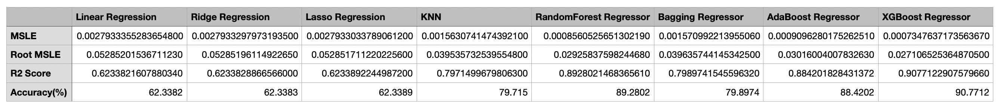
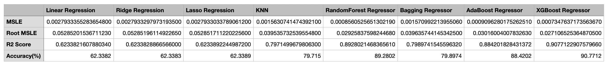

About
About This Project
The data set was obtained from a non-profit Kaggle project that periodically scrapes Craigslist for every used vehicle entry within the United States. It is then uploaded to Kaggle and contains most all relevant information that Craigslist provides on car sales including columns like 'price', 'odometer', 'year', 'model', 'manufacturer', 'condition', 'title status', 'latitude/longitude', and 17 other categories. Data scraping was most recently performed in January 2021. In total, the original .csv file contains 458,213 vehicle listings.
The following steps were then performed and shall be discussed:
- Data Cleaning (Identifying Null Values, Filling-In Missing Values & Removing Outliers) Using pandas, NumPy, & seaborn
- Data Preprocessing (Standardization or Normalization) & Splitting
- Training & Testing the Data Using 8 Algorithm Models Obtained from scikit-learn, yellowbrick, & XGBoost ML Libraries in python
- Comparison of Each ML Models Performance
- Raw Data Analysis and Insights Using matplotlib
- Conclusions - Determination of Accurate Price Prediction Model
Since this study concerns price predictions, it's important to consider how price distributions in regression models are skewed right, as shown in the distplot diagram of the actual data set below. For any fixed value of X (independent / predictor variable), the Y value (price / dependent / target variable) prediction will be inaccurately higher than it actually is and should be corrected for. To solve this problem, a log transformation is used to scale the price, thereby generating accurate predictions of the actual target values. For this reason, evaluations of ML model accuracies are calculated based on Root Mean Squared Log Error (RMSLE) and the Coefficient of Determination (R²).
Data Preparation
Cleaning and Preprocessing
Irrelevant Feature Removal
Removal of 'url', 'region_url', 'vin', 'image_url', 'description', 'county', and 'state' columns
Filling In Missing Values
Missing values for each respective column are viewed below.

These values were filled using variants of the IterativeImputer method that estimates each feature from all the others according to different regression models. Mean and median in addition to 4 of these estimators were compared for the purpose of missing feature imputation. The models include 'BayesianRidge', which is based on regularized linear regression, 'DecisionTreeRegressor', which accounts for non-linear regression, 'ExtraTreesRegressor', which effectively imputes missing values in mixed-type data, that may involve continuous and/or categorical data including complex interactions and nonlinear relations. Finally 'KNeighborsRegressor', a nearest neighbor imputation method. Effectiveness is decided based upon the least amount of MSE. From the figure below, 'BayesianRidge' provides the least error thus it was chosen to fill missing values.
Outlier Removal
InterQuartile Range for 'price', 'odometer', and 'year' were visualized using the boxplots seen below. Any value considered more extreme than 1 ½ times the interquartile range above the third quartile or below the first quartile were deemed as outliers and eliminated. The box plots show that for prices, any listing amount whose log is below 6.55 or above 11.55 are the outliers. The box plot for odometer visually does not provide the interquartile range due to extreme outliers for this feature. These values were calculated and eliminated. The boxplot for year identifies 1996 as being the Q1 boundary for older vehicles. Since no vehicles newer than 2020/2021 exist, only extremely old vehicles could act as outliers for this variable.

Cleaned Data Set
We began with 458,213 rows and 25 columns of data and removed 62,231 rows and 7 columns to end up with 395,982 rows and 18 columns to be utilized by ML algorithms.
Label Encoding
Our data set contains 12 categorical variables and 4 numerical variables, excluding the price column. In order to apply the ML models, the categorical variables need to be tranformed into numerical variables. The sklearn library LabelEncoder was applied for this purpose.
Normalization
Since the data set is not normally distributed, all of the features have different ranges. Feature scaling is essential for ML algorithms that calculate distances between data. If not to scale, the feature with a higher value range starts dominating when calculating distances. Therefore, the range of all features should be normalized so that each feature contributes approximately proportionately to the final distance. The sklearn library MinMaxScalar was applied for this process.
Split the Data
In this process, 90% of the data was split as training data and remaining 10% used as test data.
Machine Learning
Training and Testing the Data
In statistics, linear regression is a linear approach to modeling the relationship between a scalar response (dependent variable) and one or more explanatory variables (independent variables). In linear regression, the relationships are modeled using linear predictor functions whose unknown model parameters are estimated from the data. Such models are called linear models.
The performance of linear regression is determined by the differences between the actual values and predicted values. While the model presents a seemingly good fit, it only surmounted an R² score of 63%, thus other models may provide better prediction results. Additionally, linear regression considers 'year', 'odometer', 'fuel', and 'cylinders' to be the most important variables in predicting price as viewed in the feature importance graph.
Ridge Regression is a technique used for analyzing a multiple regression model that suffers from multicollinearity, or when more than two explanatory variables are highly linearly related. This commonly occurs in models with a large number of parameters. Ridge regression regularizes all parameters equally and provides improved efficiency in parameter estimation problems in exchange for a tolerable amount of bias. This is suited for multicollinearity, where ordinary least squares provide unbiased regression coefficients (maximum likelihood estimates as observed in the data set).
A yellowbrick library by Alpha Selection employing cross validation was used to find the best alpha value (20.336) to fit the data set. Since our data set does not contain a large number of parameters, the Ridge model provides a low R² score of 63%, proving it to be unsuitable as our predictor algorithm.
Ridge shrinks/regularizes the coefficients of the variables but does not make them zero. Lasso (least absolute shrinkage and selection operator) is a regression analysis method that performs both variable selection and regularization in order to enhance the prediction accuracy and interpretability of the resulting statistical model. It was originally formulated for linear regression models though Lasso regularization is easily extended to other statistical models including generalized linear models, generalized estimating equations, proportional hazards models, and M-estimators. Lasso’s ability to perform subset selection relies on the form of the constraint and has a variety of interpretations in terms of geometry, Bayesian statistics and convex analysis.
Not suprisingly, the third linear regression based ML model tested produced the same R² score of 63%. Relative significance of features can be ascertained from either the Linear or Ridge models features importance graph above, which both demonstrate nearly identical features value statistics.
Regression based on k-nearest neighbors - the target is predicted by local interpolation of the targets associated with the nearest neighbors in the training set. KNN is a type of instance-based learning, or lazy learning, where the function is only approximated locally and all computation is deferred until function evaluation. The quality of the predictions depends on the distance measure. Therefore, the KNN algorithm is suitable for applications for which sufficient domain knowledge is available. Since our data set has 13 features for prediction, KNN is an appropriate method to apply for this study.

From both of the above figures, it can be observed that RMSLE value is at lowest when k is four. On the other hand, there is no signifcant difference between RMSLE values for when k is three through six. By choosing the lowest k occurrence, the data set is trained with more consistency using neighborsN is 5 and a 'euclidean distance' metric. When compared to the prior ML models, the performance of KNN is better, with greater accuracy and less error, producing an price predictability R² score of 80%.
A Random Forest is a meta estimator that fits a number of classifying decision trees on various sub-samples of the data set and uses averaging to improve the predictive accuracy and control over-fitting. The sub-sample size is controlled with a max_samples parameter if bootstrap=True (default), otherwise the whole dataset is used to build each tree. In random forests, each tree in the ensemble is built from a sample drawn with replacement (i.e., a bootstrap sample) from the training set. Furthermore, when splitting each node during the construction of a tree, the best split is found either from all input features or a random subset of size max features. Randomness helps to prevent over-fitting and decreases the variance of the forest estimator.

In our model, 180 trees were created with max features of 0.5. In general, the more the trees the better the results. As a result, this model achieved an R² score of 90%. The diagrams above show that 'year' and 'odometer' are the variables with the highest degree of usefulness of all the variables in entire random forest, and that actual versus predicted MSLE's were nearly identical for all except 3 of the 25 instances.
A Bagging Regressor is an ensemble meta-estimator that fits base regressors each on random subsets of the original data set and then aggregates their individual predictions (either by voting or by averaging) to form a final prediction. Such a meta-estimator can typically be used as a way to reduce the variance of a black-box estimator (e.g., a decision tree), by introducing randomization into its construction procedure and then making an ensemble out of it.
In our model, DecisionTreeRegressor is used as the estimator with max depth of 20, which creates 50 decision trees that results in an R² score of 81%. Despite its complexity, the performance of Random Forest is much better than Bagging Regressor. The fundamental difference between these two ML models is that in Random forests, only a subset of features are selected at random out of the total and the best split feature from the subset is used to split each node in a tree, unlike in bagging where all features are considered for splitting a node.
The core principle of AdaBoost is to fit a sequence of weak learners (i.e., models that are only slightly better than random guessing, such as small decision trees) on repeatedly modified versions of the data. The predictions from all of them are then combined through a weighted majority vote (or sum) to produce the final prediction. The data modifications at each so-called boosting iteration consist of applying weights w1, w2, ..., wN to each of the training samples. Initially, those weights are all set to wi = 1/N, so that the first step simply trains a weak learner on the original data. For each successive iteration, the sample weights are individually modified and the learning algorithm is reapplied to the reweighted data.
At a given step, those training examples that were incorrectly predicted by the boostedmodel induced at the previous step have their weights increased, whereas the weights are decreased for those that were predicted correctly. As iterations proceed, examples that are difficult to predict receive ever-increasing influence. Each subsequent weak learner is thereby forced to concentrate on the examples that are missed by the previous ones in the sequence.
In our model, the Decision Tree Regressor is used as an estimator with a max depth of 24, 200 trees, and a learning_rate of 0.6. This produced a strong R² score of 89%. The bar plot indicates that 'year' is the most important feature when determining car price, followed by 'odometer' and then 'vehicle model'.
XGBoost is an ensemble learning method that is a specific implementation of the Gradient Boosted method which uses more accurate approximations to find the best tree model. Sometimes, it may not be sufficient to rely upon the results of just one machine learning model. Ensemble learning offers a systematic solution to combine the predictive power of multiple learners. The resultant is a single model which gives the aggregated output from several models. The models that form the ensemble, also known as base learners, could be either from the same learning algorithm or different
learning algorithms. Bagging (previously discussed) and boosting are two widely used ensemble learners. Though these two techniques can be used with several statistical models, the most predominant usage has been with decision trees. XGBoost employs scalability to drive fast learning through parallel and distributed computed, in addition to efficient memory usage. In order to fit the data set to the model, parameters were adjusted to provide a 24-fold cross validation. Max depth was set to 24, with 200 decision trees (estimators) and a learning rate of 0.4.
Learning Rate: The most important hyperparameter when configuring a neural network, which controls how much to change the model in response to the estimated error each time the model weights are updated. Choosing the learning rate is challenging as a value too small may result in a long training process that could get stuck, whereas a value too large may result in learning a sub-optimal set of weights too fast or an unstable training process.
n_estimators: This is the number of trees you want to build before taking the maximum voting or averages of predictions. A higher number of trees give you better performance with the drawback being longer run times.
The algorithm produced the highest R² score at 91%. The performance chart displays the great accuracy of the prediction model.
Comparison
Machine Learning Model Performance
 

Of the eight different ML models we explored, three produced prediction accuracies of 90% which is a substantial result. These algorithms were RandomForestRegressor, AdaBoostRegressor, and XGBoost. By performing different models, we were able to learn more about the data set and the relative importance of the variables. As each ML algorithm was applied, information regarding the four statistical measures observed in the table above was gathered in order to assess the suitability of the ML model in meeting our studies objective of accurately predicting used car prices.
The first three models were based in linear regression and were all found to be unsuitable for our prediction needs based on their poor MSLE, Root MSLE and R² scores. The relative importance of the features/variables generated by these early models however, indicated not suprisingly that several factors influence used car prices. These factors are 'year', 'odometer', 'fuel', and 'cylinders'. As we performed more learning models on the data, a few tendencies became apparent in that relative importance of features were always found to be most for both 'odometer' and 'year', and then a handful of others.
Moving onto more complex algorithms that allowed for much larger decision trees and depth parameters is when higher accuracies of price predictions were achieved. Our data set contained 12 categorical variables and 4 numerical variables, which despite being encoded and scaled prior to utilization by the ML models, presented the need for a model that could be sensitive to the very broad importance value range for many different variables.
This turned out to be the XGBoost ensemble-based ML model. The advantage of XGBoost is its scalable and accurate implementation of gradient boosting machines and several advanced features for model tuning, computing environments and algorithm enhancement. It is capable of performing the three main forms of gradient boosting (Gradient Boosting (GB), Stochastic GB and Regularized GB) and it is robust enough to support fine tuning and addition of regularization parameters. The 91% accuracy model established here provides a jumping off point for further exploration.
Visualizations
Raw Data Visual Analysis
The pair plots of vehicle year, price, and odometer are shown above. Correlations between these variables are visually apparent from the distribution of the scatter plots. Firstly, the pricing of vehicles tends to increase the newer they are. Secondly, the higher the odometer of a vehicle, the older the vehicle tends to be. A correlation between pricing and odometer is less noticeable though it still appears that prices tend to increase in vehicles with lower mileage. These three variable interactions confirm already well-establish concepts of car value.

The pricing of vehicles based on their fuel types also demonstrates variability. Here, diesel-powered used vehicles are being sold for the highest value, followed by other, electric vehicles, and lastly gas and hybrid vehicles. Due to the popularity of gas-powered and hybrid vehicles, in addition to the their greater presencce in the used car market, pricing for these vehicle types are likely lower due to competition. Electric vehicle technology tends to be more expensive which may be contributing to higher resale values.


and in
Conclusion
With the help of the data visualizations and exploratory data analysis, the data set was uncovered and features were explored deeply. The relationships between features were examined. ML models were applied to predict the price of used cars in order of increasing algorithm complexity, which ultimately located a model that provides great potential in becoming an actual price prediction application utilized by the public. In order to further develop this model, a much larger data set would have to be utilized to allow for more robust price predictions. Although 16 different features, both numerical and categorical, were applied here, potentially more features could be included due to the broad importance value range for many different variables when considering used car value.
Machine learning appears to have the potential to change relationships between producers and consumers in positive ways. In this application, we have explored the potential for it to assist consumers in navigating the used car market. A highly accurate machine learning price prediction model could potentially revolutionize the used automotive industry by giving buyers the power to locate the most reasonable deal. Consequently, sellers, both private party and dealer, will have to adjust their pricing schemes in order to accurately represent true market values. This may attract an even higher percentage of buyers to the used car market and potentially impact the new car market in turn. Such a predicament would indeed be quite amusing.
Future steps include obtaining more used car data from Kaggle in which to apply the XGBoost ML algorithm, and then loading the prediction model into a Heroku hosted application.